O problema
Hoje o sistema de agendamento existente é fragmentado e não padronizado, cada unidade utiliza o google agendas.
O cidadão liga para a unidade e a enviado a pessoa um link que dá acesso ao google agendas, e a equipe não tem acesso fácil ao sistema de informações do agendamento e o cidadão não um sistema intuito e moderno.
o processo demora varios minutos alem de nao entregar muito informação para equipe, como a taxa de cancelamento ou comparecimento
AS-IS · o processo antes do MVP
O caminho real, com quem faz, o que entra, onde espera e o que é automatizável. Fonte: tabela AS-IS do projeto.

Fluxograma AS-IS · amarelo: etapa manual; tracejado: ponto de espera. Os números correspondem à tabela. Fonte Mermaid.
| Etapa | Quem faz | Entra | Ação | Sai | Sistema | Regra | Onde espera | Tempo | Automatizável |
|---|---|---|---|---|---|---|---|---|---|
| Consulta de vagas | Cidadão | Posto desejado | Consulta datas e horários disponíveis | Opção de agendamento | Site ou atendimento presencial | Deve haver vaga disponível | Até encontrar horário disponível | A medir | Sim, com regra clara |
| Solicitação de agendamento | Cidadão | Dados pessoais e horário | Preenche e envia formulário | Solicitação registrada | Formulário ou papel | Campos obrigatórios preenchidos | Durante o preenchimento | A medir | Pouco |
| Verificação da vaga | Sistema ou servidor | Solicitação recebida | Confere disponibilidade | Agendamento validado | Planilha ou conferência manual | Não exceder a capacidade | Até a conferência | A medir | Sim, com regra clara |
| Confirmação | Servidor ou sistema | Solicitação validada | Confirma data e horário | Protocolo de agendamento | E-mail ou comunicação manual | Vaga confirmada | Até o envio da confirmação | A medir | Sim, com regra clara |
| Comparecimento | Cidadão | Confirmação do agendamento | Comparece ao posto na data marcada | Cidadão presente ou ausência | Atendimento presencial | Data e horário agendados | Na chegada ao posto | A medir | Não |
| Registro do atendimento | Servidor do posto | Agendamento e cidadão presente | Registra comparecimento e atendimento | Situação atualizada | Planilha ou sistema | Registrar presença ou ausência | Até o registro pelo servidor | A medir | Pouco |
TO-BE · o processo com o MVP
O que muda em cada etapa, quem passa a fazer e o ganho esperado. Fonte: tabela TO-BE do projeto.

Fluxograma TO-BE · verde: máquina (automação local); azul: pessoa (fé pública). Fonte Mermaid.
Implantar um sistema centralizado de agendamento da CIN
- configurar agenda
definir postos, horarios e vagas
A pessoa assistida pela máquinapadronização - consultar horario
exibir vagas disponiveis
A máquina (automação)agilidade - agendar atendimento
cidadao escolhe
A pessoa assistida pela máquinafaciidade - gerar indicadores
consolidar dados
A pessoa assistida pela máquinamelhor gestao - Confirmar por e-mail
E-mail com protocolo enviado na hora
A máquina (automação)Cidadão recebe a confirmação sem ligar - Cancelar ou remarcar
Cidadão cancela pelo protocolo e a vaga volta
A pessoa assistida pela máquinaMenos vaga perdida - Registrar comparecimento
Posto marca presença ou ausência no painel, mesmo sem internet
A pessoa assistida pela máquinaTaxa de comparecimento medida
| Etapa | O que muda | Quem faz | Benefício | Esforço |
|---|---|---|---|---|
| configurar agenda | definir postos, horarios e vagas | A pessoa assistida pela máquina | padronização | Médio |
| consultar horario | exibir vagas disponiveis | A máquina (automação) | agilidade | Baixo |
| agendar atendimento | cidadao escolhe | A pessoa assistida pela máquina | faciidade | Baixo |
| gerar indicadores | consolidar dados | A pessoa assistida pela máquina | melhor gestao | Médio |
| Confirmar por e-mail | E-mail com protocolo enviado na hora | A máquina (automação) | Cidadão recebe a confirmação sem ligar | Baixo |
| Cancelar ou remarcar | Cidadão cancela pelo protocolo e a vaga volta | A pessoa assistida pela máquina | Menos vaga perdida | Baixo |
| Registrar comparecimento | Posto marca presença ou ausência no painel, mesmo sem internet | A pessoa assistida pela máquina | Taxa de comparecimento medida | Médio |
O que o MVP entrega
Tela-assinatura: Calendário do mês com vagas por dia e horários em botões grandes.
Menu do MVP: Agenda do postoHoráriosGestãoConfiguração
Regras de negócio
| ID | Regra | Quando | Tipo | Exceção |
|---|---|---|---|---|
RN01 | Só exibir postos ativos. | Seleção de posto | Validação | Nenhuma |
RN02 | Exibir somente horários abertos e com vagas. | Consulta de calendário | Negócio | Nenhuma |
RN03 | Gerar protocolo único para cada reserva | Confirmação | Validação | Nenhuma |
RN04 | Impedir reservas acima da capacidade. | Confirmação da reserva | Validação | Nenhuma |
RN05 | O posto só gerencia sua própria agenda. | Área restrita | Acesso | Gestão conforme autorização |
RN06 | Um agendamento ativo por telefone (ou CPF) em cada posto | Na reserva | Validação | Nenhuma |
RN07 | Cancelamento pelo cidadão até 2 h antes; a vaga volta para o calendário | No cancelamento | Negócio | Posto pode cancelar a qualquer momento, com motivo |
RN08 | Tolerância de 15 minutos; depois o posto marca ausente | No dia do atendimento | Negócio | Decisão do posto |
RN09 | Agendamento com 1 a 30 dias de antecedência | Na consulta de vagas | Validação | Nenhuma |
RN10 | Dados do cidadão apagados 90 dias após o atendimento; ficam as contagens | Rotina diária | LGPD | Nenhuma |
Papéis
| Papel | Quem é | O que vê | O que faz | O que não faz | Registro |
|---|---|---|---|---|---|
| cidadao | pessoa que solicita o atendimento | postos, horarios | agendar e consultar a sua reserva | acessar dados de terceiros | agendamento e protocolo |
| posto | servidor | agenda e agendamentos | configurar os horarios e administrar | acessar dados de outros postos sem o perfil | alteracoes e cancelmentos |
| gestao | responsavel pela administracao do sistema | dados operacionais | gerenciar postos | alterar registros | alterar administracoes |
Métricas do piloto
Como testar
O MVP é um `index.html` offline, com dados fictícios. Abra index.html.
cd Apps/agendamento-cin python construir.py python testes/testar.py python testes/cenarios.py python testes/jornada.py # Lightpanda (via WSL, CDP em 9222 e HTTP em 8000) python testes/jornada.py --cdp http://127.0.0.1:9222 --base http://127.0.0.1:8000
Documentos: PROJETO.md · sprint.md · README.md